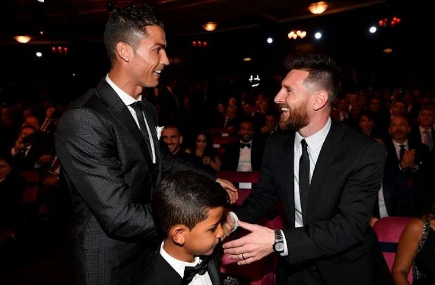

Cristiano Ronaldo ayant 35 ans et Messi 33 ans, on peut s'attendre à une prise de retraite des deux joueurs, ce serait un coup dur à surmonter pour les fans du football.
Ronaldo a déjà anoncé que la coupe du monde 2022 serait sa dernière et qu'il prendrait sa retraite international, tandis que Messi est resté muet sur le sujet.
On espère évidemment une surprise et que les deux joueurs continueront le plus longtemps possible d'écrire leur page sur l'histoire du football.